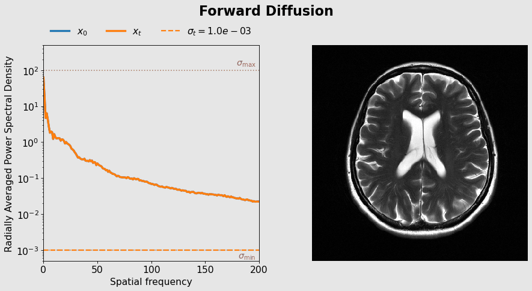
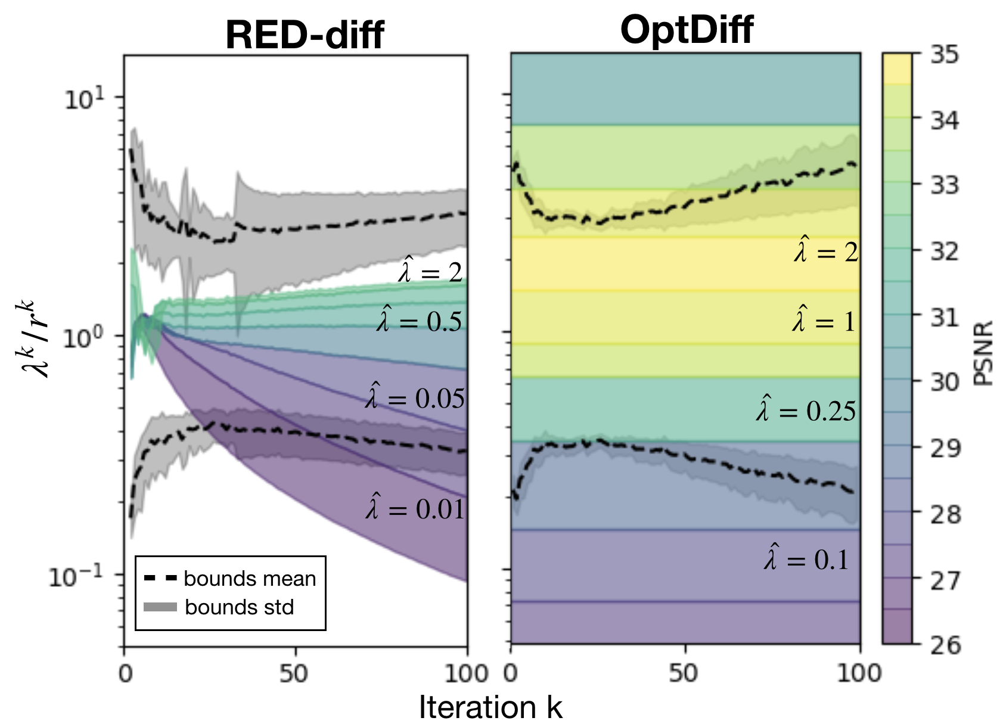
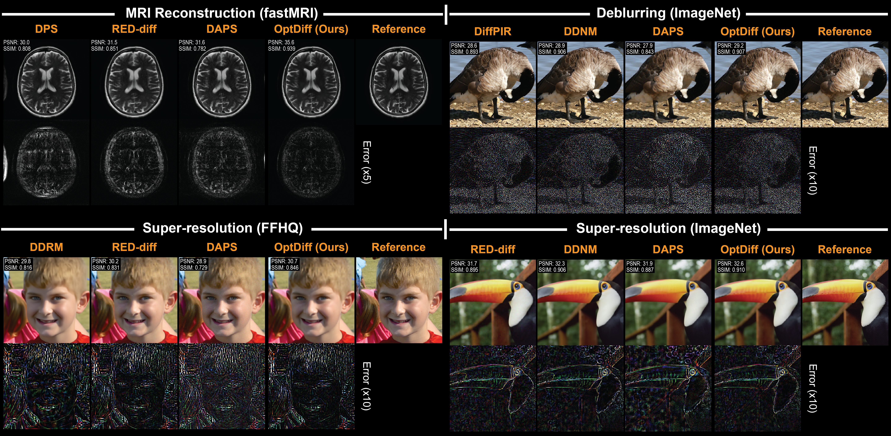

Slow inference
Iterative posterior sampling often requires hundreds of steps, resulting in high computational costs.
1 Department of Bioengineering 2 Department of Radiology 3 Department of Electrical Engineering
Stanford University
* Equal contribution † Equal senior contribution
Accepted to NeurIPS 2026
This technical overview assumes familiarity with diffusion models and inverse problems. For background, see Further resources.
Score-based diffusion models achieve state-of-the-art performance for inverse problems, but their practical deployment is hindered by long inference times and cumbersome hyperparameter tuning. While pretrained diffusion models can be reused across tasks without retraining, inference-time hyperparameters such as the noise schedule and posterior sampling weights typically require ad hoc adjustment for each problem setup.
We propose principled reparameterizations that induce invariances, allowing the same hyperparameters to be reused across multiple problems with less retuning. Building on RED-diff, which reformulates posterior sampling as an optimization problem, we develop OptDiff: Optimizers with Diffusion-based priors. OptDiff simplifies tuning and facilitates the integration of convex optimization tools to accelerate inference. Experiments on image reconstruction, deblurring, and super-resolution show substantial speedups and improved image quality.
Among its many applications, generative AI can help recover images from incomplete or blurry measurements, including those used in computational photography and medical imaging. However, existing methods are often slow and require extensive trial and error to adjust their settings for different problems. We introduce OptDiff, a framework that uses mathematical insights to redefine key settings so they can be reused across different problems with little adjustment. This approach also enables the use of established optimization techniques to further accelerate reconstruction. Across MRI reconstruction, image deblurring, and resolution enhancement, OptDiff achieves comparable or better image quality with fewer computational steps than existing methods. Our work could make advanced image reconstruction more practical in applications where speed and computing resources are limited.
Pretrained diffusion models provide powerful image priors for solving inverse problems. [1] However, two major challenges limit their practical deployment:
Iterative posterior sampling often requires hundreds of steps, resulting in high computational costs.
Reconstruction quality strongly depends on inference-time hyperparameters, which often require retuning across problem configurations.
OptDiff introduces invariant reparameterizations that simplify hyperparameter tuning. Building on the RED-diff optimization formulation [2], it also develops a hyperparameter tuning pipeline that supports momentum and preconditioning for faster inference.
OptDiff develops invariant reparameterizations for two families of inference hyperparameters: the noise schedule and the sampler. Building on the RED-diff optimization formulation, a greedy-optimal tuning scheme combines these components to simplify hyperparameter selection and support the design of faster inverse solvers.
While noise-schedule design has been extensively studied for unconditional generation, its extension to inverse problems remains largely unexplored. Which noise levels are useful for reconstruction? Measurements from an inverse problem may already constrain low-frequency information, while the effective data noise floor limits how accurately the image can be reconstructed. We approach this question through spectral autoregression and an estimation error covariance analysis to derive principled noise-schedule criteria, as illustrated in the animation below.

Natural images typically exhibit a power-law spectrum, with greater power at low spatial frequencies [3]. During forward diffusion, added white noise progressively corrupts the signal, with weaker high-frequency components becoming dominated by noise earlier. In reverse diffusion, low-frequency structure is recovered first, followed by progressively higher frequencies conditioned on the recovered low-frequency content [4] [5].
This spectral autoregression perspective connects the diffusion noise level to the frequency content being reconstructed, from coarse structure at higher noise levels to finer spatial details as the noise level decreases.

Unlike unconditional generation, inverse problems provide measurements that already constrain part of the image. In some settings, these measurements preserve reliable low-frequency information, such as MRI acquisitions with sampled central k-space or image deblurring with operators that preserve low frequencies.
When low-frequency information is available, starting reverse diffusion at the large noise levels used for unconditional generation may introduce unnecessary steps. Since the measurements already constrain the low-frequency components, reverse diffusion can start at a lower noise level and focus on recovering the remaining high-frequency information.
Similarly, when the data contain an effective noise floor, continuing reverse diffusion beyond a certain point provides little additional improvement in estimation accuracy.
These observations motivate our approach to noise-schedule design for inverse problems.

The spectral autoregression perspective suggests that the noise schedule should depend on what information is already available and what remains to be reconstructed. We use a linear minimum mean squared error (LMMSE) analysis to formalize this intuition.
Estimation error covariance quantifies the uncertainty remaining when estimating a signal from noisy observations. Here, the noisy observation is the diffusion-corrupted signal xt, distinct from the inverse-problem measurements. Let Φ(Σ; σ) denote the LMMSE estimation error covariance for prior covariance Σ and diffusion noise level σ. Studying how this covariance changes with the noise level gives criteria for where to start and stop reverse diffusion.
For this analysis, we assume the low-frequency content is known exactly. The conditional covariance ΣH|L describes the remaining uncertainty in the high-frequency components.
At very large diffusion noise levels, the diffusion-corrupted signal provides little information about these unknown components, so the reduction in estimation error covariance is negligible. As the noise level decreases, the signal becomes more informative and the covariance reduction increases.
We select the boundary of the high-noise region where this reduction remains at most a fraction τmax of the prior uncertainty:
Starting criterion: small reduction relative to the prior uncertainty.
The symbol ≼ denotes a covariance bound that holds in every signal direction. Under a wide-sense stationary model with an ideal low-frequency mask, the starting criterion gives
Here, S(ω) is the signal power spectral density and ΩH contains the unknown high frequencies. In practice, we choose σmax at the lower bound, skipping larger noise levels where the diffusion-corrupted signal provides little information about these components.
At the other end of the diffusion process, an additive white data noise floor with variance σs2 limits estimation accuracy. Let Σs denote the clean-signal covariance. After all diffusion noise is removed, the best attainable LMMSE covariance under this model is .
As diffusion noise decreases, the estimation error covariance approaches this limit. We stop when the remaining gap is at most a fraction τmin of the best attainable covariance:
Stopping criterion: small remaining gap relative to the attainable covariance.
In the high signal-to-noise ratio regime, where the largest eigenvalue of Σs is much greater than σs2, the stopping bound simplifies to
In practice, we select the upper boundary of the stopping criterion. Smaller noise levels already satisfy the desired accuracy tolerance, so continuing further provides little additional improvement under this model. The manuscript on arXiv gives the full covariance bound.
Both criteria assess whether a reduction in estimation uncertainty is negligible. Each pairs a question with a reference covariance, so the reduction is measured relative to a meaningful baseline.
Question
How much does the diffusion-corrupted signal reduce uncertainty about the unknown high-frequency components?
Reference covariance
ΣH|L: the uncertainty in the high-frequency components after the low-frequency content is known.
Question
How much additional uncertainty could be removed by eliminating the remaining diffusion noise?
Reference covariance
Σ0: the best attainable LMMSE estimation error covariance under the data noise floor.
We express these criteria through relative tolerances τmax and τmin, each between zero and one, rather than directly prescribing absolute noise levels. Each tolerance expresses the allowed covariance reduction or residual as a fraction of its corresponding reference covariance. The tolerances specify consistent relative covariance criteria, while the corresponding noise levels adapt to each problem’s spectral properties and noise floor.
This is the basis of the invariant reparameterizations. Our invariance experiments show aligned performance curves across configurations, supporting reuse of the tolerance parameters. Because the derivation is independent of a particular inverse solver, the resulting schedules can also be applied across solvers.
Optimization-based diffusion inverse solvers require balancing data consistency and diffusion-prior regularization, a challenge complicated by variations in gradient magnitudes throughout inference. Our approach is inspired by normalized gradient methods [6] and common-descent methods in multiobjective optimization [7]. We introduce a scale-invariant reparameterization that expresses this balance through a single trade-off parameter across diffusion noise levels. A complementary common-descent analysis establishes conditions under which an update can decrease both objectives.

Diffusion-based inverse solvers use different approaches to posterior inference. Score-ALD [8] and DPS [9] guide sampling with approximations of the data-consistency contribution to the posterior score. Other methods incorporate optimization more explicitly, including plug-and-play approaches such as DiffPIR [10] and variational approaches such as RED-diff [2].
A central challenge in optimization-based approaches is balancing data consistency with diffusion-prior regularization. RED-diff uses variational inference to formulate posterior reconstruction as a stochastic optimization problem:
Here, f measures data consistency, g represents diffusion-prior regularization evaluated at noise level t, and λt controls their relative contribution.
RED-diff uses a time-dependent regularization weight with a signal-to-noise ratio (SNR)-based schedule. [2] However, the magnitude of the diffusion-prior gradient varies throughout inference, making the balance sensitive to the weighting function and its hyperparameters.
Building on the RED-diff formulation, we consider an update combining the data-consistency gradient ∇fk and diffusion-prior gradient ∇gk, controlled by the step size αk and regularization weight λk:
Because gradient magnitudes vary across diffusion noise levels, a fixed regularization weight need not maintain a consistent balance. We reparameterize the step size and weight as
Substituting these expressions gives an update with both gradients normalized:
Here, α̂k > 0 controls the step scale, while λ̂ > 0 controls the relative contribution of the normalized prior gradient. These expressions assume both gradients are nonzero.
This formulation is invariant to positive rescaling of either gradient. Normalization cancels positive multiplicative factors associated with the diffusion noise level, removing dependence on absolute gradient magnitudes and allowing a single λ̂ to replace a handcrafted SNR-based regularization schedule.
To understand how data consistency and diffusion-prior regularization can be balanced, we derive common-descent conditions that characterize when an update provides a descent direction for both objectives. [7] When the gradients point in conflicting directions, the regularization weight must lie within an admissible interval determined by their relative magnitudes and alignment.
Under our reparameterization, these conditions simplify to
where θk is the angle between the gradients. Importantly, the admissible trade-off depends only on the gradient directions, rather than their magnitudes, providing a theoretical basis for using a single λ̂ throughout inference.
The common-descent figure illustrates how conventional SNR-based weighting can violate the common-descent bounds, while our reparameterization provides a more consistent balance. Furthermore, Figure 1 in the manuscript demonstrates aligned performance curves across different reverse-diffusion intervals, providing empirical evidence that a single λ̂ can be reused throughout inference.
Hyperparameter tuning typically involves cumbersome multidimensional grid searches, which become increasingly expensive as solvers become more complex and additional parameters are introduced. We develop a greedy-optimal hyperparameter tuning scheme that uses a small tuning set to obtain greedy-optimal hyperparameter references. These reference values allow us to restrict subsequent grid searches and decouple joint hyperparameter tuning into simpler, sequential searches. Our approach is inspired by SURE-based hyperparameter tuning [11], particularly its iteration-wise application in diffusion-based reconstruction [12].
This framework also facilitates the integration of advanced optimization techniques, such as momentum and preconditioning, without increasing tuning complexity. Our ablation studies (Table 2 in the manuscript) show that the greedy-optimal estimates provide useful upper-bound performance references, with the selected hyperparameters achieving reconstruction quality close to these references. These ablations also show that momentum and preconditioning improve reconstruction quality over vanilla gradient descent, particularly at fewer function evaluations.
Our proposed reparameterizations produce well-aligned performance curves across different inverse problem configurations, in contrast to the variability observed with conventional hyperparameters, as illustrated in the overview animation.
Our noise-schedule design is derived independently of any particular inverse solver. We demonstrate its transferability across different solvers, improving reconstruction quality in the evaluated cases.
We evaluate OptDiff against eight existing diffusion-based inverse solvers on MRI reconstruction, deblurring, and super-resolution, using fastMRI [16], ImageNet [17], and FFHQ [18]. Across these tasks, OptDiff achieves competitive or improved reconstruction quality compared with existing methods.

Accelerated reconstruction of multicoil T2-weighted brain images from fastMRI. Each setting is evaluated on 330 test slices.
| Method | PSNR (dB) ↑ | SSIM ↑ |
|---|---|---|
| DPS [9] | 28.94 ± 1.54 | 0.774 ± 0.066 |
| DiffPIR [10] | 27.17 ± 1.08 | 0.650 ± 0.072 |
| ΠGDM [13] | 28.88 ± 1.27 | 0.734 ± 0.078 |
| RED-diff [2] | 31.92 ± 1.44 | 0.840 ± 0.034 |
| DDS [19] | 28.92 ± 1.28 | 0.828 ± 0.027 |
| DAPS [14] | 31.38 ± 1.42 | 0.771 ± 0.057 |
| OptDiff (ours) | 34.93 ± 1.38 | 0.921 ± 0.029 |
The best mean in each column is bold and the second best is underlined.
OptDiff achieves the highest mean PSNR and SSIM among the compared methods at R = 8.
| Method | PSNR (dB) ↑ | SSIM ↑ |
|---|---|---|
| DPS [9] | 35.82 ± 1.46 | 0.775 ± 0.069 |
| DiffPIR [10] | 30.33 ± 0.97 | 0.691 ± 0.077 |
| ΠGDM [13] | 30.69 ± 1.37 | 0.753 ± 0.086 |
| RED-diff [2] | 36.79 ± 1.43 | 0.872 ± 0.035 |
| DDS [19] | 33.72 ± 1.14 | 0.930 ± 0.030 |
| DAPS [14] | 34.32 ± 1.76 | 0.875 ± 0.041 |
| OptDiff (ours) | 38.45 ± 1.58 | 0.948 ± 0.023 |
The best mean in each column is bold and the second best is underlined.
OptDiff achieves the highest mean PSNR and SSIM among the compared methods at R = 4.
Gaussian deblurring on ImageNet and FFHQ, evaluated on 330 images per dataset. Settings specify the blur kernel size k and standard deviation σ.
| Method | PSNR (dB) ↑ | SSIM ↑ | LPIPS ↓ |
|---|---|---|---|
| DPS [9] | 24.25 ± 3.97 | 0.602 ± 0.192 | 0.420 ± 0.187 |
| DDRM [15] | 29.48 ± 3.65 | 0.815 ± 0.101 | 0.227 ± 0.118 |
| DDNM [20] | 32.60 ± 3.89 | 0.906 ± 0.045 | 0.030 ± 0.013 |
| DiffPIR [10] | 32.22 ± 3.68 | 0.892 ± 0.049 | 0.061 ± 0.032 |
| RED-diff [2] | 28.65 ± 3.67 | 0.790 ± 0.087 | 0.185 ± 0.090 |
| DAPS [14] | 31.39 ± 3.13 | 0.853 ± 0.047 | 0.107 ± 0.033 |
| OptDiff (ours) | 33.07 ± 3.76 | 0.910 ± 0.040 | 0.061 ± 0.031 |
The best mean in each column is bold and the second best is underlined.
OptDiff achieves the highest mean PSNR and SSIM. DDNM achieves the lowest LPIPS.
| Method | PSNR (dB) ↑ | SSIM ↑ | LPIPS ↓ |
|---|---|---|---|
| DPS [9] | 33.00 ± 2.50 | 0.898 ± 0.034 | 0.078 ± 0.028 |
| DDRM [15] | 36.84 ± 1.62 | 0.945 ± 0.013 | 0.065 ± 0.023 |
| DDNM [20] | 36.95 ± 1.78 | 0.949 ± 0.013 | 0.027 ± 0.008 |
| DiffPIR [10] | 36.58 ± 1.76 | 0.942 ± 0.014 | 0.040 ± 0.012 |
| RED-diff [2] | 34.71 ± 1.74 | 0.908 ± 0.014 | 0.068 ± 0.020 |
| DAPS [14] | 34.13 ± 1.39 | 0.888 ± 0.013 | 0.088 ± 0.021 |
| OptDiff (ours) | 36.99 ± 1.82 | 0.948 ± 0.013 | 0.060 ± 0.018 |
The best mean in each column is bold and the second best is underlined.
OptDiff achieves the highest mean PSNR; DDNM achieves the highest SSIM and lowest LPIPS.
| Method | PSNR (dB) ↑ | SSIM ↑ | LPIPS ↓ |
|---|---|---|---|
| DPS [9] | 21.30 ± 3.27 | 0.484 ± 0.200 | 0.371 ± 0.159 |
| DDRM [15] | 27.43 ± 3.83 | 0.740 ± 0.138 | 0.308 ± 0.142 |
| DDNM [20] | 28.07 ± 4.12 | 0.789 ± 0.110 | 0.134 ± 0.059 |
| DiffPIR [10] | 27.41 ± 3.72 | 0.746 ± 0.114 | 0.145 ± 0.064 |
| RED-diff [2] | 24.19 ± 3.49 | 0.604 ± 0.171 | 0.428 ± 0.156 |
| DAPS [14] | 26.28 ± 2.80 | 0.671 ± 0.086 | 0.247 ± 0.075 |
| OptDiff (ours) | 27.70 ± 3.87 | 0.772 ± 0.106 | 0.211 ± 0.088 |
The best mean in each column is bold and the second best is underlined.
DDNM achieves the best mean PSNR, SSIM, and LPIPS. OptDiff ranks second in PSNR and SSIM.
| Method | PSNR (dB) ↑ | SSIM ↑ | LPIPS ↓ |
|---|---|---|---|
| DPS [9] | 25.88 ± 6.47 | 0.749 ± 0.129 | 0.159 ± 0.115 |
| DDRM [15] | 29.46 ± 2.32 | 0.818 ± 0.051 | 0.194 ± 0.057 |
| DDNM [20] | 32.54 ± 2.15 | 0.893 ± 0.030 | 0.074 ± 0.022 |
| DiffPIR [10] | 32.05 ± 1.95 | 0.870 ± 0.030 | 0.060 ± 0.019 |
| RED-diff [2] | 29.46 ± 2.32 | 0.818 ± 0.051 | 0.194 ± 0.057 |
| DAPS [14] | 28.38 ± 2.19 | 0.786 ± 0.055 | 0.199 ± 0.040 |
| OptDiff (ours) | 32.61 ± 2.22 | 0.891 ± 0.031 | 0.127 ± 0.034 |
The best mean in each column is bold and the second best is underlined.
OptDiff achieves the highest mean PSNR, DDNM the highest SSIM, and DiffPIR the lowest LPIPS.
Image reconstruction after 4× or 16× downsampling along each spatial dimension, evaluated on 330 images per dataset.
| Method | PSNR (dB) ↑ | SSIM ↑ | LPIPS ↓ |
|---|---|---|---|
| DPS [9] | 30.50 ± 2.62 | 0.866 ± 0.044 | 0.071 ± 0.025 |
| DDRM [15] | 31.08 ± 2.31 | 0.869 ± 0.039 | 0.144 ± 0.041 |
| DDNM [20] | 30.94 ± 2.45 | 0.872 ± 0.041 | 0.085 ± 0.028 |
| DiffPIR [10] | 31.06 ± 2.44 | 0.873 ± 0.040 | 0.092 ± 0.031 |
| RED-diff [2] | 31.25 ± 2.37 | 0.875 ± 0.037 | 0.108 ± 0.034 |
| DAPS [14] | 29.63 ± 1.73 | 0.763 ± 0.028 | 0.179 ± 0.028 |
| OptDiff (ours) | 31.33 ± 2.73 | 0.869 ± 0.035 | 0.117 ± 0.035 |
The best mean in each column is bold and the second best is underlined.
OptDiff achieves the highest mean PSNR; RED-diff achieves the highest SSIM and DPS the lowest LPIPS.
| Method | PSNR (dB) ↑ | SSIM ↑ | LPIPS ↓ |
|---|---|---|---|
| DPS [9] | 23.72 ± 4.90 | 0.618 ± 0.209 | 0.299 ± 0.207 |
| DDRM [15] | 25.49 ± 3.66 | 0.682 ± 0.157 | 0.355 ± 0.148 |
| DDNM [20] | 25.79 ± 3.93 | 0.703 ± 0.152 | 0.286 ± 0.136 |
| DiffPIR [10] | 25.28 ± 3.78 | 0.682 ± 0.152 | 0.242 ± 0.117 |
| RED-diff [2] | 25.90 ± 3.86 | 0.708 ± 0.142 | 0.328 ± 0.148 |
| DAPS [14] | 26.50 ± 3.43 | 0.706 ± 0.132 | 0.239 ± 0.067 |
| OptDiff (ours) | 26.07 ± 3.96 | 0.715 ± 0.148 | 0.350 ± 0.156 |
The best mean in each column is bold and the second best is underlined.
DAPS achieves the highest mean PSNR and lowest LPIPS. OptDiff ranks second in PSNR and achieves the highest SSIM.
| Method | PSNR (dB) ↑ | SSIM ↑ | LPIPS ↓ |
|---|---|---|---|
| DPS [9] | 22.62 ± 2.28 | 0.664 ± 0.086 | 0.286 ± 0.078 |
| DDRM [15] | 23.25 ± 2.15 | 0.679 ± 0.083 | 0.319 ± 0.088 |
| DDNM [20] | 22.86 ± 2.12 | 0.663 ± 0.083 | 0.249 ± 0.079 |
| DiffPIR [10] | 22.77 ± 2.14 | 0.658 ± 0.085 | 0.246 ± 0.077 |
| RED-diff [2] | 23.01 ± 2.07 | 0.663 ± 0.082 | 0.282 ± 0.082 |
| DAPS [14] | 22.63 ± 1.96 | 0.572 ± 0.064 | 0.358 ± 0.046 |
| OptDiff (ours) | 23.58 ± 2.27 | 0.685 ± 0.083 | 0.356 ± 0.094 |
The best mean in each column is bold and the second best is underlined.
OptDiff achieves the highest mean PSNR and SSIM. DiffPIR achieves the lowest LPIPS.
| Method | PSNR (dB) ↑ | SSIM ↑ | LPIPS ↓ |
|---|---|---|---|
| DPS [9] | 17.95 ± 3.02 | 0.365 ± 0.192 | 0.388 ± 0.125 |
| DDRM [15] | 19.87 ± 2.52 | 0.452 ± 0.184 | 0.688 ± 0.195 |
| DDNM [20] | 20.15 ± 2.68 | 0.460 ± 0.183 | 0.633 ± 0.207 |
| DiffPIR [10] | 19.66 ± 2.61 | 0.439 ± 0.178 | 0.577 ± 0.194 |
| RED-diff [2] | 20.34 ± 2.76 | 0.460 ± 0.182 | 0.704 ± 0.193 |
| DAPS [14] | 20.53 ± 2.49 | 0.418 ± 0.136 | 0.522 ± 0.081 |
| OptDiff (ours) | 20.44 ± 2.75 | 0.468 ± 0.184 | 0.704 ± 0.186 |
The best mean in each column is bold and the second best is underlined.
DAPS achieves the highest mean PSNR and lowest LPIPS. OptDiff ranks second in PSNR and achieves the highest SSIM.
Accepted to NeurIPS 2026. Download BibTeX
@inproceedings{oscanoa2026optdiff,
title = {Principled Design of Diffusion-based Optimizers
for Inverse Problems},
author = {Oscanoa, Julio and Sivgin, Irmak and Alkan, Cagan
and Ennis, Daniel and Pauly, John and Pilanci, Mert
and Vasanawala, Shreyas},
year = {2026},
booktitle = {Advances in Neural Information Processing Systems},
note = {Accepted to NeurIPS 2026},
eprint = {2605.11506},
archivePrefix = {arXiv},
primaryClass = {cs.CV},
url = {https://arxiv.org/abs/2605.11506}
}Suggested reading for the ideas behind this work.
An introduction to score functions, noise perturbations, and how the reverse process generates samples.
A guide to reconstruction with pretrained diffusion priors and the relationships between the major approaches.
A visual explanation of frequency recovery during diffusion, complementing our noise schedule discussion.